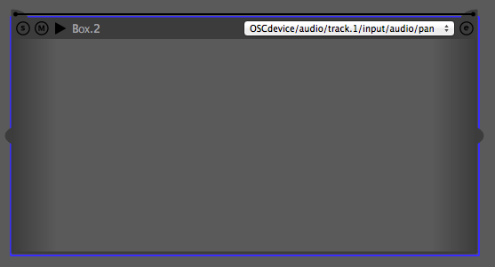
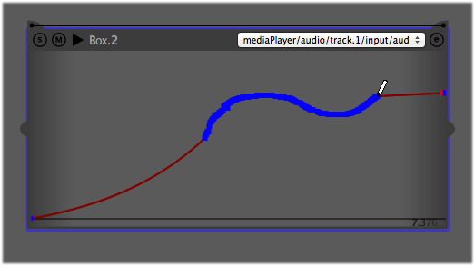

In this tutorial, we will see how to create events and automations in i-score. Assuming you have already set up some devices in i-score Device explorer, you are now ready to start writing your own scenario.
In the timeline panel, draw an empty box using cmd+drag (on Mac) or ctrl-drag (on Win and Linux).
{kind=link}
When done, you can freely move the box in i-score’s timeline and adjust its start time and duration. For example, we will want our box to start playing at 0 min 1 sec. and stop at 0 min. 5 sec. You can move the box by clicking its top bar and adjust its duration by dragging its lower right corner as shown below.
{kind=link}
{kind=link}
Manually adding content
We can manually set some values in our box. This is especially useful for application with no option to echo back their state.
As an example, we will add some automation values for the pan value of the first audio of an application.
Once having created a box as explained above, browse the Device explorer until you reach the desired address. ie :
/mediaPlayer/audio/track.1/input/balance/position
If you double-click in the start of end cell, you see that the cell brings a textfield. You can then enter some values to be used as the start event and end event of the automation box.

Content added to a start or end event is symbolized in the box by a grey shade at the box side.

When entering both values, you that i-score automatically created an interpolation in the automation box. Also notice that the check box in the interpolation column got checked. You can now add other parameters values for this automation box or create other boxes in your scenario.
Note that boxes can be played individually by clicking the play button in the box top-bar. This can be useful if you want to quickly check the automation you just wrote.
Automatic content addition
When working with an application echoing back its value to i-score, storing some parameters value into an event can be done automatically.
Here we will use i-score to control a Max patch built using the Jamoma framework through the Minuit protocol, as setup in the Minuit setup tutorial page. You can find this patch from the Examples folder. In order to get this example work, be sure to setup your device as explained in the Minuit tutorial and set mediaPlayer as the name of your device.
Here we will want to use this box to control a simple gain fade-in for the soundfile player in the first audio track of our Max patch.
Select our box called Box.2. It should be highlighted by a blue shadow-like.
Then from the Device explorer panel, deploy the various levels of our Patch parameters addresses until you reach the following:
mediaPlayer/audio/track.1/input/audio/gain

You can then click the checkbox beside our gain parameter to store its current value at the box’s start event. You can see that our parameter value was automatically grabbed from our Max patch and is displayed in the field next the checkbox. Again, the value is symbolized as a shade of grey at the box’s side.

If you want to remove some parameters from a box, select the parameter in the Device explorer and toggle off the checkbox or press the backspace key.
From the Max patch GUI, set the Master gain slider of the input module to 100, then store that value at the end event of Box.2. From i-score’s Device explorer, click the end checkbox next to our gain parameter.

If you play our scenario, you should see the GUI being updated as i-score goes through the automation in the box.
You can now add more content to this box by selecting other parameters from the Device explorer and checking the start and end event boxes. Note that you can select a group of parameters with a single click.
You may store an initial state for your scenario, for example, in order to set all of your parameters to a default state. To do so, click on your scenario name in the top bar, then check the start box as explained above.
Recording automations
i-score allows to record incoming parameter’s value into automation box. To do so, once selected the automation box to store value recording, navigate to the desired parameter address in the Device explorer and click on the interpolation check box while holding the cmd/ctl key down, respectively on Mac and Windows. You will see that the check box turned into a “recording” icon and the selected automation box is highlited in red. Now if you start playing your scenario, all incoming values while the box get played will be recorded as an automation.
Note that you may arm recording for many parameters at once.
{kind=link}
Editing automations
When setting a parameter’s start and end value in a box, i-score will automatically create an interpolation bewteen the two defined values. Of course, you can edit this default interpolation and further refine your automation.
From the box top-bar, select the parameter interpolation you want to edit from the drop-down menu. The interpolation function is now displayed at the box foreground.
{kind=link}
Break Point Function editing
Points can be added to the default function by clicking in the box. Note that you can delete existing point by alt-clicking a point.
{kind=link}
You can also add to each segment of the break point function a curve factor. For this, shift+click on a point and drag your mouse upward ou downward.

Free curve drawing
You can also write a custom interpolation curve by drawing in the automation box. When having selected the parameter interpolation to edit as explained above, hold down the cmd/ctl key (respectively on Mac and Windows) and drag your mouse in the automation box. As you hover the box while holding the cmd/ctl key down, you will notice that the mouse cursor changes into a pen. You can now draw a curve as desired.

You are now ready to write some nice automations to control your favorite applications !